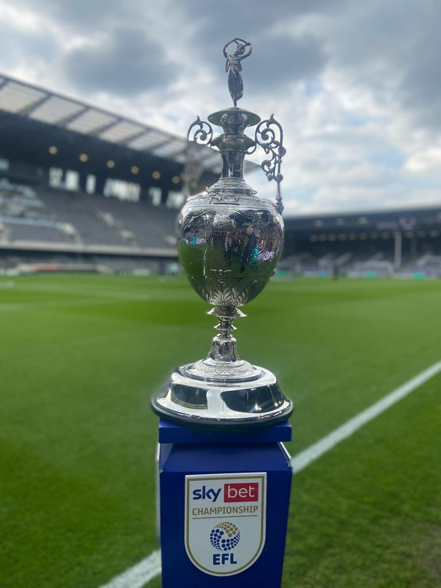

SKY BY CHAMPIONSHIP

La segunda de Inglaterra se inicio en 1892, actualmente se llama Sky By Championship desde 2004, previamente se llamo Football League Second Division (1893-1992) y Football League First Division (1992-2004)
RANKING DE MAXIMOS GANADORES
| EQUIPO | LIGAS |
|---|---|
| Manchester City | 7 |
| Leicester City | 7 |
| Sheffield Wednesday | 5 |
| Sunderland | 5 |
| Norwich | 5 |
| Birmingham | 4 |
| Middlesbrough | 4 |
| Leeds United | 4 |
| Derby County | 4 |
| Newcastle | 4 |
| Wolverhampton | 4 |
| Liverpool | 4 |
| West Bromwich | 3 |
| Bolton | 3 |
| Burnley | 3 |
| Notts County | 3 |
| Preston North End | 3 |
| Nottingham Forest | 3 |
| Fulham | 3 |
| Ipswich Town | 3 |
| Chelsea | 2 |
| Manchester United | 2 |
| West Ham | 2 |
| Tottenham | 2 |
| Aston Villa | 2 |
| Stoke City | 2 |
| QPR | 2 |
| Crystal Palace | 2 |
| Reading | 2 |
| Sheffield United | 1 |
| Cardiff City | 1 |
| Blackpool | 1 |
| Blackburn Rovers | 1 |
| Huddersfield | 1 |
| Luton Town | 1 |
| Charlton Athletic | 1 |
| Portsmouth | 1 |
| Bournemounth | 1 |
| Bury | 1 |
| Bristol City | 1 |
| Bradford City | 1 |
| Everton | 1 |
| Oldham Athletic | 1 |
| Brentford | 1 |
| Coventry City | 1 |
| Oxford United | 1 |
| Millwall | 1 |
TODOS LOS GANADORES
| AÑO | EQUIPO |
|---|---|
| 2021/22 | Fulham (3) |
| 2020/21 | Norwich (5) |
| 2019/20 | Leeds United (4) |
| 2018/19 | Norwich (4) |
| 2017/18 | Wolverhampton (4) |
| 2016/17 | Newcastle (4) |
| 2015/16 | Burnley (3) |
| 2014/15 | Bournemounth (1) |
| 2013/14 | Leicester City (7) |
| 2012/13 | Cardiff City (1) |
| 2011/12 | Reading (2) |
| 2010/11 | QPR (2) |
| 2009/10 | Newcastle (3) |
| 2008/09 | Wolverhampton (3) |
| 2007/08 | West Bromwich (3) |
| 2006/07 | Sunderland (5) |
| 2005/06 | Reading (1) |
| 2004/05 | Sunderland (4) |
| 2003/04 | Norwich (3) |
| 2002/03 | Portsmouth (1) |
| 2001/02 | Manchester City (7) |
| 2000/01 | Fulham (2) |
| 1999/00 | Charlton Athletic (1) |
| 1998/99 | Sunderland (3) |
| 1997/98 | Nottingham Forest (3) |
| 1996/97 | Bolton (3) |
| 1995/96 | Sunderland (2) |
| 1994/95 | Middlesbrough (4) |
| 1993/94 | Crystal Palace (2) |
| 1992/93 | Newcastle (2) |
| 1991/92 | Ipswich Town (3) |
| 1990/91 | Oldham Athletic (1) |
| 1989/90 | Leeds United (3) |
| 1988/89 | Chelsea (2) |
| 1987/88 | Millwall (1) |
| 1986/87 | Derby County (4) |
| 1985/86 | Norwich (2) |
| 1984/85 | Oxford United (1) |
| 1983/84 | Chelsea (1) |
| 1982/83 | QPR (1) |
| 1981/82 | Luton Town (1) |
| 1980/81 | West Ham (2) |
| 1979/80 | Leicester City (6) |
| 1978/79 | Crystal Palace (1) |
| 1977/78 | Bolton (2) |
| 1976/77 | Wolverhampton (2) |
| 1975/76 | Sunderland (1) |
| 1974/75 | Manchester United (2) |
| 1973/74 | Middlesbrough (3) |
| 1972/73 | Burnley (2) |
| 1971/72 | Norwich (1) |
| 1970/71 | Leicester City (5) |
| 1969/70 | Huddersfield (1) |
| 1968/69 | Derby County (3) |
| 1967/68 | Ipswich Town (2) |
| 1966/67 | Coventry City (1) |
| 1965/66 | Manchester City (6) |
| 1964/65 | Newcastle (1) |
| 1963/64 | Leeds United (2) |
| 1962/63 | stoke City (2) |
| 1961/62 | Liverpool (4) |
| 1960/61 | Ipswich Town (2) |
| 1959/60 | Aston Villa (2) |
| 1958/59 | Sheffield Wednesday (5) |
| 1957/58 | West Ham (2) |
| 1956/57 | Leicester City (4) |
| 1955/56 | Sheffield Wednesday (4) |
| 1954/55 | Birmingham (4) |
| 1953/54 | Leicester City (3) |
| 1952/53 | Sheffield United (1) |
| 1951/52 | Sheffield Wednesday (3) |
| 1950/51 | Preston North End (3) |
| 1949/50 | Tottenham (2) |
| 1948/49 | Fulham (1) |
| 1947/48 | Birmingham (5) |
| 1946/47 | Manchester City (5) |
| 1938/39 | Blackburn Rovers (1) |
| 1937/38 | Aston Villa (1) |
| 1936/37 | Leicester City (2) |
| 1935/36 | Manchester United (1) |
| 1934/35 | brentford (1) |
| 1933/34 | Grimsby Town (2) |
| 1932/33 | Stoke City (1) |
| 1931/32 | Wolverhampton (1) |
| 1930/31 | Everton (1) |
| 1929/30 | Blackpool (1) |
| 1928/29 | Middlesbrough (2) |
| 1927/28 | Manchester City (4) |
| 1926/27 | Middlesbrough (1) |
| 1925/26 | Sheffield Wednesday (2) |
| 1924/25 | Leicester CIty (1) |
| 1923/24 | Leeds United (1) |
| 1922/23 | Notts County (3) |
| 1921/22 | Nottingham Forest (2) |
| 1920/21 | Birmingham (2) |
| 1919/20 | Tottenham (1) |
| 1914/15 | Derby County (2) |
| 1913/14 | Notts County (2) |
| 1912/13 | Preston North End (2) |
| 1911/12 | Derby County (1) |
| 1910/11 | West Bromwich (2) |
| 1909/10 | Manchester City (3) |
| 1908/09 | Bolton (1) |
| 1907/08 | Bradford City (1) |
| 1906/07 | Nottingham Forest (1) |
| 1905/06 | Bristol (1) |
| 1904/05 | Liverpool (3) |
| 1903/04 | Preston North End (1) |
| 1902/03 | Manchester City (2) |
| 1901/02 | West Bromwich (1) |
| 1900/01 | Grimsby Town (1) |
| 1899/00 | Sheffield Wednesday (1) |
| 1898/99 | Manchester City (1) |
| 1897/98 | Burnley (1) |
| 1896/97 | Notts County (1) |
| 1895/96 | Liverpool (2) |
| 1894/95 | Bury (1) |
| 1893/94 | Liverpool (1) |
| 1892/93 | Birmingham (1) |